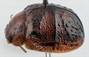
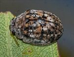
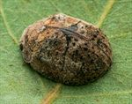
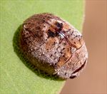
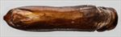
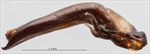
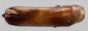
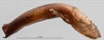
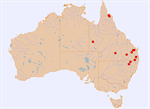

Click on images to enlarge
{kind=link}

Female, Miles, Queensland
{kind=link}

Female, Gayndah, S.E. Queensland
{kind=link}

Female, Mutdapilly, S.E. Queensland
{kind=link}

Female, Lakefield N.P., Queensland
{kind=link}

Aedeagus, dorsal view (Yuleba State Forest, Miles, S.E. Queensland)
{kind=link}

Aedeagus, lateral view (Yuleba State Forest, Miles, S.E. Queensland)
{kind=link}

Aedeagus, dorsal view (Lakefield N.P., S.E. Queensland)
{kind=link}

Aedeagus, lateral view (Lakefield N.P., S.E. Queensland)
{kind=link}

Distribution
Name
Trachymela sp. Ta61
Reference specimen
2002-022, Yuleba, SE Queensland.
Adult Description
Length: ♂ 4.9–6.2 mm (n=10), ♀ 5.4–6.6 mm (n=11).
Colouration:
- Head: light- to mid-brown, usually with a pair of black patches behind fronto-clypeal suture, one on each side midway between eye and central suture that is variable in size, usually small and round, rarely completely absent (NQ and WQ specimens) or much larger (Charleville specimens), dark-brown or black-tipped mandibles; antennomeres straw-brown to light-brown, sometimes grading to fractionally darker at apex.
- Pronotum: brown, concolorous with head, with two elongate black or very dark-brown maculae almost invariably present (absent in NQ and WQ specimens), one end (usually the broader) of each of these situated close to posterior edge of pronotum opposite humeral callus then extending roughly towards anterior edge near centre but generally curving posteriorly before reaching it.
- Scutellum: brown, concolorous with pronotum, sometimes edged in darker brown.
- Elytra: brown, concolorous with pronotum, with prominent black areas present that are confined to elevated features such as verrucae, humeral callus, the area around elytral summit and the elytral suture or extend to the surrounding elytral surface or rarely be completely absent (WQ specimen); punctures are similar to or a fractionally darker shade than interstices.
- Venter & Legs: head variable, completely black or brown, or with a broad brown central band (including gula) and black laterally, thoracic ventrites light- to mid-brown with metaventrites usually darker in shade, at least laterally, and prosternum also darker, legs and abdominal ventrites lighter in shade, inner surface of elytral epipleura brown, very rarely with a dark tinge.
- Cuticular Wax: base colour of the wax is brown. However, there are various areas where a light-grey wax overlies this. A fairly thin lighter-coloured band starts at the front margin of pronotum, cuts across the foveal area to cross into the elytron at boundary between discal and marginal region. The band continues along this boundary, but becomes less distinct. Another grayish band starts at the humeral callus and continues to the elytral apex. In addition, an area around elytral summit has light-grey cuticular wax, one component of which is a semi-circular patch just posterior to the summit with the summit as its centre. Quite prominent over all these are the two intersecting, thin, black, wax-free lines made up of the elytral suture and the transverse ridge. The lighter-coloured area around elytral summit is dotted with black spots, these being wax-free verrucae.
Morphology:
- Head: punctures moderately large (pd ≈ 1.5–2× ef) and slightly unevenly and densely distributed. Antennae short, particularly in females (AL/BL: ♂ 35–41%, ♀ 31–33%), filiform.
- Pronotum: almost evenly curved transversely, foveal depression absent with epidermis often slightly elevated in a small pustule behind eyes, discal area with surface noticeably uneven and puncturation clearly to more vaguely impressed, evenly to a little unevenly distributed and relatively dense (spacing ≈ 2–3 pd), becoming much more coarse at lateral margins. Front margins join lateral margins in a smoothly rounded right-angle, with lateral margin initially straight before curving gradually and sometimes unevenly towards rear margin, broadest just in front of posterio-lateral angle.
- Scutellum: punctured, with punctures similar or better defined than on pronotum, evenly or unevenly distributed.
- Elytra: surface slightly unevenly curved, punctures distinct and relatively large, closely spaced and evenly distributed over anterior two-thirds of surface, surface more granular in posterior third, with much smaller punctures scattered on the interstices, a prominent elevated ridge runs transversely from elytral summit to middle of edge of disc with elytral surface noticeably depressed just anterior to it, many small to moderate-sized rounded elevated verrucae (some with a small central puncture) are scattered about the surface posterior to the central ridge and anterior to the lateral depression, sometimes vaguely aligned longitudinally or (rarely) laterally, surface continuous under humeral callus. Vertical extension of epipleurae considerable (HCE/PW = 0.36–0.41).
- Venter: prosternal process almost parallel, lightly closed anteriorly, a very sparse scatter of short setae present along prosternal process and on mesoventrite, a single long seta present on median and posterior trochanters, 1–2 on anterior trochanters; front edge of metaventrite beveled, slightly rounded; inner edge of posterior of epipleura lacking setae.
Male Genitalia (Aedeagus):
- Dimensions: long (LPE/BL = 36–42%), linear.
- Dorsal view: shaft approximately parallel-sided, thin (WPE/LPE = 0.22) from basal section to close to apex from where sides converge smoothly towards apex, tip triangular, dorsal surface smooth, dorso-median channel absent or very poorly defined, dorsal ostial processes extend forward to about apical extreme of ostium, ostium oval-shaped.
- Lateral view: ventral surface of shaft curved about 1/3 of length from base, then almost straight to apex, tip prominently deflexed.
Immature Stages
Unknown.
Similar species
- Ta71: this species is extremely close in appearance to Ta61. Individuals can be distinguished primarily by the black maculae present on the pronotum of Ta61, the brown rather than black internal epipleural surfaces of Ta61, and the fact that the pronotum of Ta61 is concolorous with the elytra. The aedeagi of the two species are very different in shape.
- Ta10: this slightly smaller species is usually less dark than Ta61 overall, with the black maculae on the pronotum being quadrate and confined to the area behind the eyes. The transverse ridge in the centre of each elytron is less pronounced and often interrupted in Ta10. Ventrally, Ta10 is lighter in colour, in particular the prosternum is concolorous with the surrounding ventrites. The aedeagus is very different with its possession of vertical dorsal flanges near rear of ostial opening.
Notes
- Taxonomy: The grouping of specimens included under this name is very likely composed of three separate species, with one of them very likely being the species described as Trachymela carpentariae (Blackburn, 1897). This small beetle is one of the prettiest of all the Trachymela species, due to the combination of the prominent "cross", formed by the elytral suture and transverse ridge, and the arrangement and contrasting colours of cuticular wax.
- Distribution & Abundance: Recorded from SE Queensland (Yuleba, Durong), South West Queensland (Charleville), Far Western Queensland (Boulia), and North Queensland (Lakefield N.P.).
- Host Associations: The majority of individuals of Ta61 have been collected from ironbarks (Eucalyptus section Adnataria), primarily Eucalyptus melanophloia (8 records) but also E. crebra (3 records). A single record from far western Queensland is from E. coolabah and two (one each from S.E. Queensland and far north Queensland) from Blakella tessellaris.
- Morphological Variation: The North Queensland specimens (Lakefield N.P.) are most clearly different, with a slight difference in the shape of the aedeagus (LPE/BL is smaller, ventral surface more curved and other differences) and lacking the black markings on head and pronotum. The far western Queensland specimens (Boulia) lack any black colouration dorsally and have a more wrinkled appearance due to laterally elongated verrucae, with the aedeagus more curved ventrally but otherwise very similar to that of the Ta61 reference specimen (from Yuleba, SE Queensland). A specimen from Durong (SE Queensland) has a well-defined dorso-median channel and a different pattern of black on pronotum. The differences in the distribution of the cuticular wax on the dorsal surface is a strong indicator that more than one species is likely present within this grouping. This is clearly visible with the specimens shown in the illustrations.
Copyright © 2026. All rights reserved.